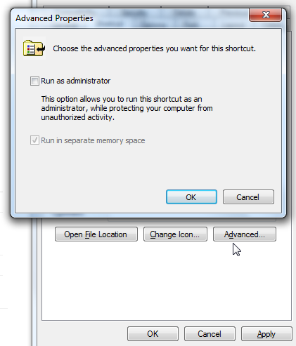

On Windows 7:
Create a shortcut to that batch file
Right click on that shortcut file and choose
Properties
Click the
Advanced
button to find a checkbox for running as administrator
Check the screenshot below
